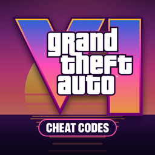

Every reported GTA VI cheat code for PS5 and Xbox Series X|S — with how to unlock and enter each one. Free, in English, Français, فارسی, Español, Italiano and العربية.
Codex VI is an unofficial fan-made guide, not affiliated with, endorsed or sponsored by Rockstar Games, Take-Two Interactive, Sony Interactive Entertainment or Microsoft. All trademarks belong to their respective owners.